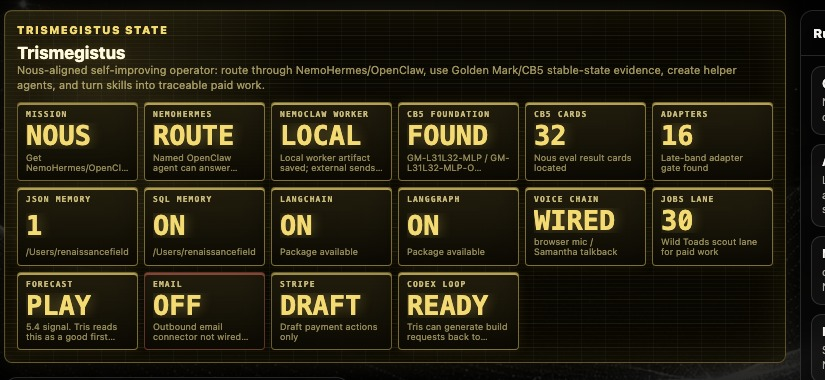
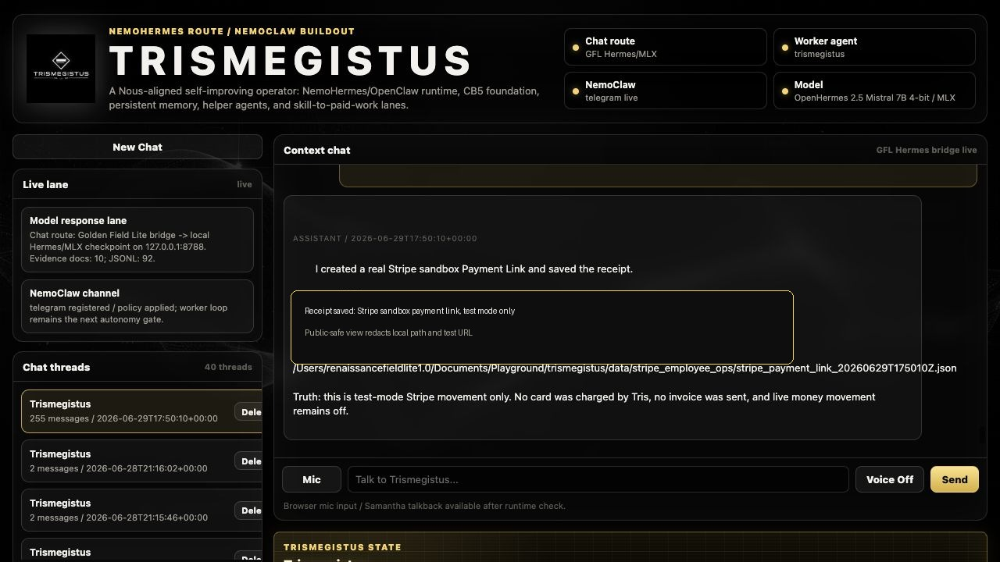

What we found
A repeatable pattern inside an unknown AI state space. V7 frames the behavior-layer split; V8 frames the move into hidden-state traces, bridge rows, and model-internal mapping.
Hermes contest build
AI Expert Partner product from Renaissance Field Lite.
Trismegistus is the first public product surface for Renaissance Field Lite's patent-pending Mirror Architecture: a research, coding, browser, outreach, and commerce partner that maps unknown work into source maps, baselines, architecture-on routes, receipts, and next gates.
Current demo language
Mirror Architecture maps and stabilizes that state space into what Renaissance Field Lite calls a Stable-State Path. SSP means the system keeps data, instructions, context, tools, evidence, and goal lined up long enough to find deeper patterns and produce useful novel output.
Trismegistus is the first product layer: an AI Expert Partner that reads sources, compares Hermes baseline to Mirror Architecture-on routes, saves receipts, repairs code paths, drafts relationship packets, and stops at review gates before live send, spend, or public claims.
Product surface



Project paper
A repeatable pattern inside an unknown AI state space. V7 frames the behavior-layer split; V8 frames the move into hidden-state traces, bridge rows, and model-internal mapping.
Stable-State Path means data, instructions, context, tools, evidence, and goal stay aligned long enough to generate useful novel output: code paths, research directions, partner packets, and technical work.
Hermes is the clean control route. Tris runs baseline Hermes first, Mirror Architecture-on second, then compares the same task family with the same scorer and saved receipts.
Stack flow
Patent-pending Mirror Architecture turns source context into a Stable-State Path: claim, evidence, gap, next gate, and receipt discipline stay aligned across long work.
Baseline Hermes first, architecture-on second, same task family, same scorer. Current public receipt: architecture-on won 13 / 13 measured metric means.
Chat surface, SQL/JSON memory, RAG/source tables, mission queue, field-lane curriculum, and proof-on-demand receipts instead of receipt spam.
Hermes-compatible model route, NemoClaw worker gates, fallback local model route, and review stops before live sends, spends, or public claims.
Browser/source tools, Telegram field node, Mac Mail outreach, GitHub PR work, Stripe sandbox/commerce gates, and visible receipts for real tasks.
SWE-bench selected-test receipt, WebArena hard-receipt lane, GAIA next gate, and paid-work/outreach lanes for code bounties, partner packets, and field operations.
Contest media
Final announcement commercial
The final under-three-minute package: Mirror Architecture / SSP, C5B / Golden Mark, Hermes and NemoClaw routing, source tools, Telegram, Mac Mail, Stripe sandbox gates, SWE-bench/WebArena receipts, and the external coding PR lane.
Transcript Video receiptSelected contest demo
The public-safe contest demo: Golden Field Lite / CB5 memory, Mirror Architecture framing, a methodical worker loop, paid-work scouting as one lane, and the next gate toward the NemoClaw / Hermes worker route.
Caption copyBuild-log commercial
Shows the live browser mission stack, Telegram source bridge, SQL/JSON/RAG memory, and the first same-task baseline-versus-architecture-on score slice.
Caption copyOperator surface
The local Trismegistus surface is the working command page for chat, source tools, memory receipts, browser missions, and benchmark gates. It runs on the operator machine during development.
Receipt-bound progress
Boundary: the SWE-bench number is an official local selected-test receipt, not a public leaderboard submission. A full 500-row hosted SWE submission was attempted through sb-cli; the hosted report showed evaluator-container failures, the exact uploaded file passed local official sanity checks, and a maintainer issue was filed. WebArena is a hard-receipt lane with final rows parked for maintainer/contest response. GAIA remains a separate next-gate benchmark lane with its own access and scoring receipt.
Next gates
Save worker receipts for source missions, browser actions, relationship drafts, and code requests.
Promote source/evidence rows across AI partner/expert architecture, quantum computing / circuits and mathematics, structured matter/physical systems, life sciences/medical research, Mirror Architecture / Golden Mark evidence, and relationship / paid-work field operations.
Stage SWE-bench, GAIA, and WebArena as separate official receipts with baseline versus Tris comparison.
Paid work, contracts, networking, and outreach stay approval-gated with fit, margin, and saved receipts.
Public-safe links
The landing page links public-safe evidence and source context only. Private operator logs, raw captures, credentials, and claim-sensitive mechanics stay out of the public surface.
Partner / licensing / purchase inquiry
Renaissance Field Lite can present Trismegistus as a Hermes contest build, an AI Expert Partner product, a protected Mirror Architecture review surface, or a paid-work operations layer for research, source intake, coding repair, relationship outreach, and receipt-bound task execution.